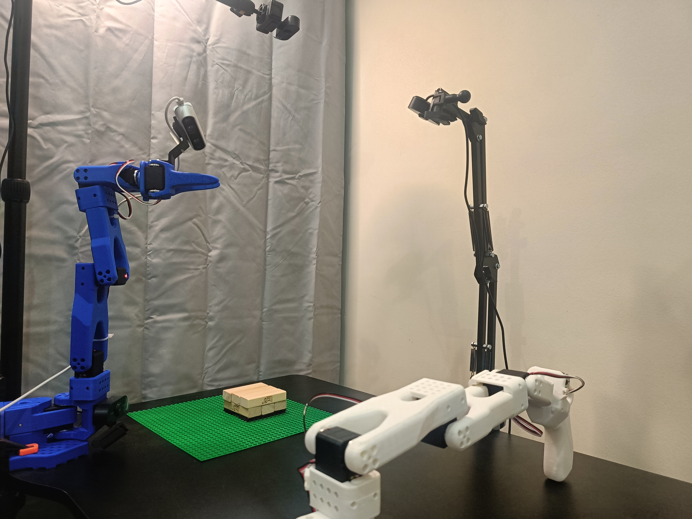

SmolVLA: Vision-Language-Action Model for Affordable Robotics
A compact, efficient, and community-driven Vision-Language-Action (VLA) model that enables natural language-driven perception and control for robotics applications.
Project Overview
SmolVLA is a compact, efficient, and community-driven Vision-Language-Action (VLA) model that enables natural language-driven perception and control for robotics applications. Unlike existing massive VLA models with billions of parameters, SmolVLA is designed to be trained on a single GPU and deployed on consumer-grade hardware or even CPUs.
Technical Architecture
SmolVLA Architecture Overview
SmolVLA consists of a compact pretrained vision-language model with a specialized Action Expert that processes three types of inputs:
- Language Instructions: Natural language commands for task execution
- RGB Images: Visual observations from robot cameras
- Robot Sensorimotor State: Current robot joint positions and sensor data
The model uses alternating cross-attention and self-attention blocks to generate low-level action sequences, enabling precise robotic control through natural language instructions.
Key Technical Features
- Lightweight Architecture: Only 450 million parameters (100M for action expert) vs. billions in other VLAs
- Single GPU Training: Designed to train on a single GPU and deploy on consumer hardware
- Layer Skipping: Uses features from earlier VLM layers to halve computational cost
- Minimal Visual Tokens: Only 64 tokens per frame with pixel shuffle operation
- Flow Matching: Better inductive bias for complex action distributions
- Asynchronous Inference: 30% faster task completion with decoupled processing
Architecture Components
- Compact Pretrained VLM: Uses SmolVLM-2 backbone optimized for multi-image inputs
- Action Expert: Alternating cross-attention and self-attention blocks
- Three Input Types:
- Natural language instructions
- RGB camera observations
- Robot sensorimotor state (projected to token space)
- Chunked Action Generation: Outputs n low-level actions per prediction
Performance Highlights
- Competitive Results: Matches or exceeds VLAs 10× larger in size
- Benchmark Success: Strong performance on LeRobot and SO-101
- Knowledge Transfer: Effective multitask fine-tuning and cross-task learning
- Real Robot Validation: Tested and validated on actual robotic platforms
Resources & References
Academic Paper
Citation:
@article{shukor2025smolvla,
title={SmolVLA: A Vision-Language-Action Model for Affordable and Efficient Robotics},
author={Shukor, Mustafa and Aubakirova, Dana and Capuano, Francesco and Kooijmans, Pepijn and Palma, Steven and Zouitine, Adil and Aractingi, Michel and Pascal, Caroline and Russi, Martino and Marafioti, Andres and Alibert, Simon and Cord, Matthieu and Wolf, Thomas and Cadene, Remi},
journal={arXiv preprint arXiv:2506.01844},
year={2025}
}
Paper Link: https://arxiv.org/pdf/2506.01844
Code Repository
GitHub Repository: https://github.com/huggingface/lerobot
The repository contains the complete implementation, pretrained models, and training data for SmolVLA, making it fully reproducible and accessible to the robotics research community.